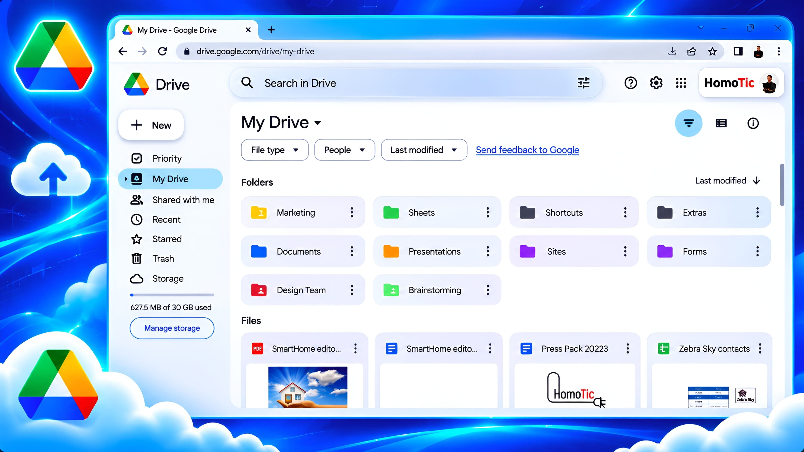
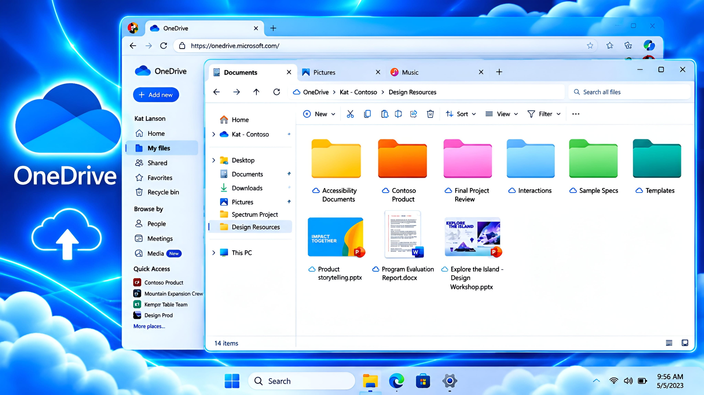
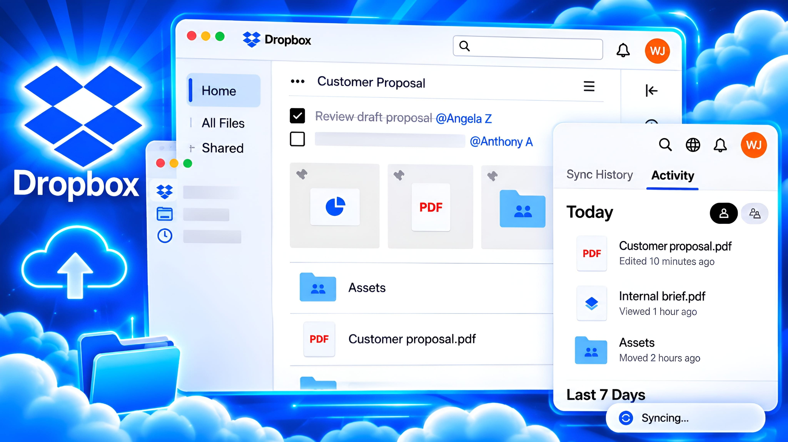
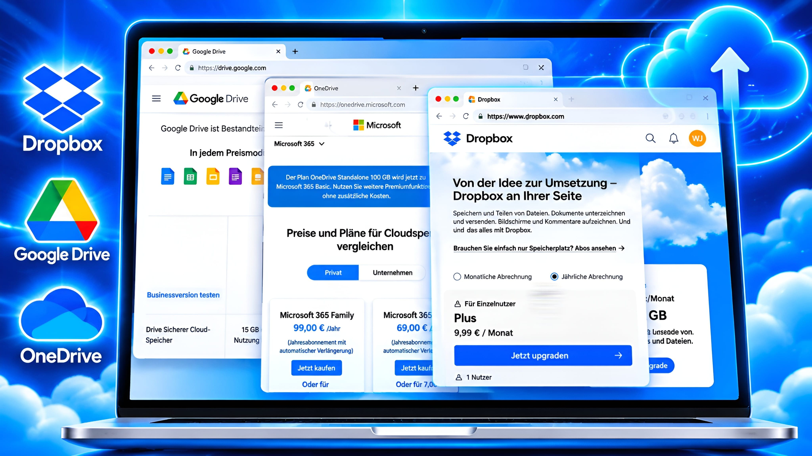
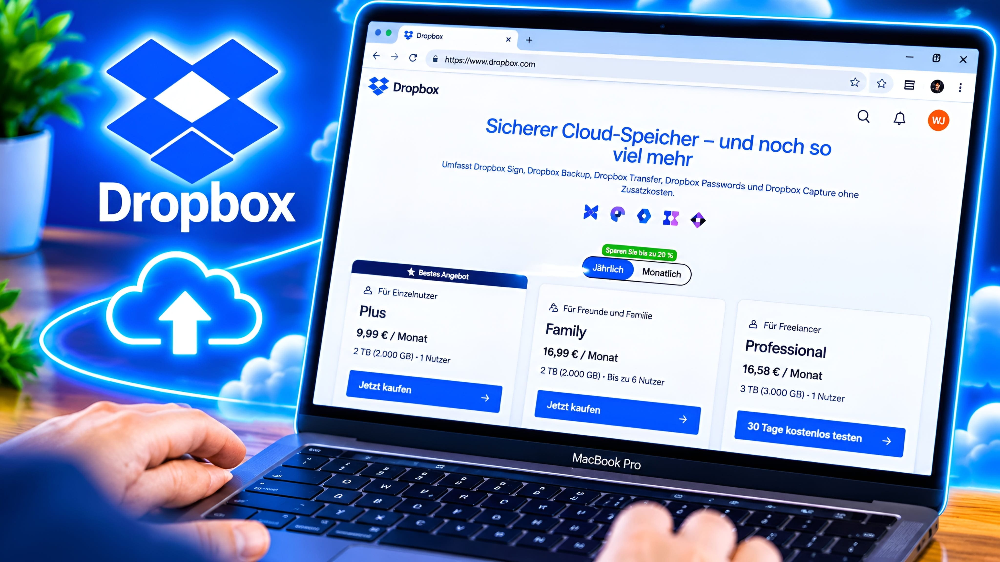

Choosing a cloud storage service sounds simple until you compare the plans. Google Drive gives you a larger free storage allowance, OneDrive works closely with Windows and Microsoft 365, and Dropbox focuses on keeping files in sync and easy to share. All three let you open your files from different devices, but they do not work in exactly the same way.
So, which one should you use in 2026? The answer depends on what you already use, how much space you need, and how you share files. In this guide, we compare their free storage, paid plans, syncing, collaboration, security, and recovery tools. We also point out details that are easy to miss before you pay.
1. What Is Cloud Storage and How Does It Work?
Cloud storage means saving your files on internet-connected servers instead of keeping the only copy on your computer or phone. You upload a photo, document, video, or folder to a cloud service. After that, you can sign in from another supported device and access the file.
Most services also have sync apps. When you edit a synced file on one device, the service can upload the change and make the updated version available on your other devices. You can also share a link instead of sending a large attachment by email.
There is one important point: cloud storage and backup are not always the same thing. If you delete a synced file, that deletion may sync to your other devices too. Recycle bins and version history can help, but they are not a reason to keep only one copy of important files.
2. Google Drive: Features, Pros and Cons

Google Drive is a natural choice if you already use a Google Account. You can store files in Drive, create documents with Google Docs, build spreadsheets in Sheets, and make presentations in Slides. These tools work in a web browser and support collaboration with other people.
A standard Google Account includes up to 15 GB of storage. That space is shared across Google Drive, Gmail, and Google Photos. This means email attachments and photo backups can use the same allowance, so the full 15 GB may not be available for Drive files. Google explains this in its Google storage help page.
For desktop users, Google Drive for desktop offers two ways to keep files on a computer. Streaming keeps most files in the cloud and uses less local disk space. Mirroring keeps a full copy on the computer, so files are available offline but use more disk space. Google explains the difference in its streaming and mirroring guide.
Google Drive pros
- 15 GB of free storage: More starting space than the free plans from OneDrive and Dropbox, although it is shared with Gmail and Photos.
- Easy online collaboration: Google Docs, Sheets, and Slides make it simple for several people to work on the same file.
- Useful search and organisation: You can organise files into folders and search across your Drive.
- Works across devices: Access files through a browser, mobile apps, or Drive for desktop.
Google Drive cons
- Shared storage limit: Gmail and Google Photos use part of the same 15 GB allowance.
- Some desktop files need internet access: Streamed files are not automatically available offline unless you make them available offline.
- Google-first workflow: It is especially convenient with Google apps, but people who mainly use Microsoft Office may prefer OneDrive.
Best fit: Students, families, and everyday users who use Gmail, Android, Google Photos, or Google Workspace tools.
3. Microsoft OneDrive: Features, Pros and Cons

Microsoft OneDrive is Microsoft's cloud storage service. It is built into Windows and works with Microsoft 365 apps such as Word, Excel, and PowerPoint. If you save an Office document to OneDrive, you can open it on another device and continue working.
A free Microsoft account includes 5 GB of cloud storage. Microsoft says this allowance is shared across OneDrive files and photos, Outlook.com attachments, and Microsoft 365 apps. Outlook.com also has a separate 15 GB email storage allowance. Check Microsoft's storage FAQ for the current rules.
OneDrive's Files On-Demand feature can show cloud files in File Explorer without downloading every file to your computer. You can choose to keep selected files on the device for offline use. This is useful if your laptop has limited storage space.
Microsoft's paid plans can include more than storage. For example, the UK Microsoft 365 Basic page lists 100 GB of cloud storage, while Microsoft 365 Personal includes 1 TB and desktop Office apps. Prices and offers can change, so check the local OneDrive plans page before subscribing.
OneDrive pros
- Windows integration: OneDrive appears in File Explorer and works with the Windows sync experience.
- Microsoft 365 connection: It is convenient for Word, Excel, and PowerPoint documents.
- Files On-Demand: Keep files visible without storing every file locally.
- Recovery options: Version history and the recycle bin can help recover earlier or deleted files. Some wider restore and ransomware recovery features depend on the plan.
OneDrive cons
- Only 5 GB free: This can fill up quickly if you back up photos and documents.
- Microsoft account storage is shared: OneDrive files and Outlook.com attachments count toward the Microsoft cloud storage quota.
- Some benefits require a subscription: The full desktop Office apps and larger storage allowances are part of paid Microsoft 365 plans.
Best fit: Windows users, Microsoft Office users, and people who already pay for Microsoft 365.
4. Dropbox: Features, Pros and Cons

Dropbox is a cloud storage service known for syncing files between computers, phones, and the web. It works with many file types and does not require you to use a particular office suite. This can be useful when you regularly exchange files with people who use different devices or software.
The free Dropbox Basic plan starts with 2 GB of storage and allows you to connect up to three devices. It is enough for a small collection of documents, but it may not last long if you store photos or videos. Dropbox lists these limits on its Basic plan page.
Dropbox also offers online-only files and selective sync. Online-only files stay in the cloud until you need them, while selective sync lets you choose which folders are stored on a particular computer. These tools can help save local disk space. See Dropbox's guides to online-only files and selective sync.
Dropbox pros
- Simple file syncing: Files can stay updated across linked computers, phones, and the web.
- Broad file compatibility: You can store and share documents, photos, videos, and many other file types.
- Online-only and selective sync: Choose what takes up space on each computer.
- File recovery: The Plus plan currently lists 30 days to restore deleted files; other plans can offer longer periods.
Dropbox cons
- Small free allowance: 2 GB is the lowest free storage amount in this comparison.
- Fewer built-in office tools: Dropbox is mainly a file storage and sharing service, rather than a full document suite like Google Workspace or Microsoft 365.
- Useful extras may cost more: Some advanced sharing, recovery, and team controls are limited to higher plans.
Best fit: People who move files between different devices, share large files, or want a dedicated syncing service.
5. Google Drive vs OneDrive vs Dropbox: Feature Comparison

Here is a quick look at the main differences. Storage figures refer to the standard free personal plans, not business or school accounts. Features and limits can vary by country, account type, and subscription.
| Feature | Google Drive | OneDrive | Dropbox |
|---|---|---|---|
| Free storage | 15 GB shared with Gmail and Photos | 5 GB shared Microsoft cloud storage | 2 GB |
| Desktop apps | Windows and macOS | Windows and macOS | Windows, macOS and Linux |
| Mobile apps | Android and iOS | Android and iOS | Android and iOS |
| Online office tools | Docs, Sheets and Slides | Office for the web | File previews and selected document tools |
| Offline access | Available for selected files | Available for files kept on the device | Available for files marked offline |
| Storage-saving option | Stream files | Files On-Demand | Online-only and selective sync |
| File sharing | Links and user permissions | Links and user permissions | Shared links and folders |
← Swipe or drag to view the full comparison →
The table gives a general overview, not a lab test. It does not claim that one service is always faster or more reliable. Your internet connection, device, file size, and sync settings can affect the experience.
6. Free Storage and Paid Plans: What Do You Get?

The free plan is a useful place to start, but paid plans are not always directly comparable. Google One mainly adds shared Google Account storage and extra Google benefits. Microsoft 365 bundles OneDrive storage with Office apps and other services. Dropbox Plus focuses on extra storage, syncing, sharing, and recovery.
Free storage at a glance
- Google Drive: Up to 15 GB shared across Drive, Gmail, and Google Photos.
- OneDrive: 5 GB of Microsoft cloud storage, shared across OneDrive files and photos, Outlook.com attachments, and Microsoft 365 apps.
- Dropbox Basic: 2 GB for files, with the option to earn extra space through referrals in some cases.
Examples of paid plans
Google One's UK-facing plan page may show prices in a different currency depending on account and location. Its listed storage tiers include 100 GB, 2 TB, and higher options. The 100 GB plan is shared across Google Photos, Drive, and Gmail, and storage can be shared with up to five other people under eligible plans. See Google One plans and pricing for the offer shown to your account.
On Microsoft's UK site, Microsoft 365 Basic is listed with 100 GB of cloud storage at £19.99 per year or £1.99 per month. Microsoft 365 Personal includes 1 TB and the desktop Office apps; the regular UK annual price shown is £84.99, although promotional offers may appear. Check the official Microsoft plans page for current prices and renewal terms.
Microsoft 365 Family is listed in the UK with 2 TB of shared cloud storage for up to six people. Microsoft has also published different storage allocations for some older subscriptions and for new subscriptions or renewals, so check the storage quota attached to your own account rather than assuming every Family subscriber has the same arrangement.
Dropbox Plus is listed with 2 TB for one person and 30 days to restore deleted files. Dropbox's UK purchase page currently displays the Plus price in US dollars, so do not assume that the displayed amount is the final local price for every European country. Check the Dropbox UK purchase page before paying.
Price tip: Compare the final checkout price in your own country, including VAT, billing period, introductory discounts, and the renewal price. A promotional first-year price is not necessarily the price you will pay later.
7. File Syncing, Sharing and Collaboration
All three services can sync files and share them with other people. The difference is how they fit into your daily work.
Google Drive for collaboration
Google Drive is convenient when several people need to edit a document, spreadsheet, or presentation together. You can give someone Viewer, Commenter, or Editor access. You can also share a file with specific people or create a link with selected access settings. Review Google's file-sharing guide before sharing sensitive documents.
OneDrive for Microsoft Office files
OneDrive works well if your daily work happens in Word, Excel, and PowerPoint. You can save files to OneDrive, open them from another device, and use Microsoft 365 collaboration features. It is a practical option for people who already use Microsoft accounts at home, school, or work.
Dropbox for cross-platform file sharing
Dropbox is useful when you mainly need to keep files in sync and send them to people who use different devices or software. Shared links let recipients access files without needing to use the same office suite. The available link controls depend on your plan.
8. Security, Privacy and File Recovery
Security matters because cloud storage may contain personal photos, work documents, identity records, or financial files. Google, Microsoft, and Dropbox all use encryption and account protection features, but the exact options differ by service and plan.
- Google Drive: Google says files uploaded to Drive and files created in Docs, Sheets, and Slides are encrypted in transit and at rest using AES-256. Additional client-side encryption is available for eligible Google Workspace organisations when an administrator enables it. See Google's encryption information.
- OneDrive: Microsoft provides features such as Personal Vault, version history, and—in eligible Microsoft 365 subscriptions—ransomware detection and recovery. Some sharing and restore controls depend on the plan. Read Microsoft's OneDrive data protection guide.
- Dropbox: Dropbox says files are encrypted at rest with AES-256 and protected in transit with SSL/TLS. Two-step verification is available. Advanced key management and end-to-end encryption are offered for eligible plans, rather than every personal plan. See Dropbox's security overview.
Recovery is another important difference. Dropbox Plus currently lists 30 days to restore deleted files. OneDrive supports version history, and Microsoft's published retention period can depend on the account and service. Google Drive also has file activity and version history, but retention rules differ between Google files and other file types.
Do not treat a recycle bin or version history as a full backup. For files you cannot afford to lose, keep another copy on an external drive or a separate backup service. Also turn on two-step verification, use a unique password, and check link permissions before sharing.
9. Which Cloud Storage Is Best for Different Users?
Instead of choosing one service for everyone, match the service to your current devices and habits.
Choose Google Drive if...
- You use Gmail, Google Photos, Android, or Google Workspace regularly.
- You want the largest free storage allowance in this comparison.
- You often create or edit documents with other people in Google Docs, Sheets, and Slides.
Choose OneDrive if...
- You use a Windows PC and want cloud files in File Explorer.
- You work with Word, Excel, and PowerPoint files every day.
- You already subscribe to Microsoft 365 and can use the included storage and apps.
Choose Dropbox if...
- You regularly share files with people who use different platforms.
- You want a dedicated syncing service with online-only and selective sync options.
- You need the file transfer and recovery features included in a Dropbox paid plan.
You do not have to move everything to one provider. Some people use Google Drive for shared documents, OneDrive for Office files, or Dropbox for client deliveries. Just keep track of where each file lives and avoid paying for overlapping storage you do not use.
10. Final Verdict: Which Cloud Storage Should You Choose in 2026?
Google Drive, OneDrive, and Dropbox are all useful, but each one solves a slightly different problem. Google Drive offers the largest free starting allowance and makes collaboration in Google apps easy. OneDrive is a natural fit for Windows and Microsoft 365 users. Dropbox is a straightforward choice when syncing and sharing files across different platforms are the main priorities.
For many people, the easiest decision is to start with the service that matches the account and apps they already use. Check how much free space you have, try syncing a few everyday files, and test sharing with someone you trust. If you need more space, compare the local price and renewal terms before upgrading.
And remember: cloud storage helps you access files from anywhere, but important files should still have a separate backup.
11. Frequently Asked Questions
Is Google Drive better than OneDrive?
It depends on your needs. Google Drive gives you more free storage and works closely with Google apps. OneDrive is more convenient if you use Windows and Microsoft 365. Neither is the right choice for every user.
Is Dropbox free to use?
Yes. Dropbox Basic is free and starts with 2 GB of storage. It also allows up to three connected devices. You can upgrade if you need more space or extra features.
Which cloud storage gives the most free space?
Google Drive offers up to 15 GB, compared with OneDrive's 5 GB and Dropbox Basic's 2 GB. Remember that Google's 15 GB is shared with Gmail and Google Photos, while Microsoft's 5 GB is shared across Microsoft cloud storage uses such as OneDrive and Outlook.com attachments.
Can I use Google Drive, OneDrive, and Dropbox at the same time?
Yes. You can have accounts with all three services and use them for different purposes. Check your sync settings so that you do not accidentally create duplicate files or fill your computer's storage.
Can I access cloud files without an internet connection?
Yes, but you need to mark or configure the files for offline access before you lose your connection. Each service has its own settings for offline files. Files that exist only online will need an internet connection to open.
Is cloud storage a safe place for important files?
Cloud services use security measures such as encryption and account protection, but no service removes every risk. Use a strong unique password, turn on two-step verification, review sharing permissions, and keep a separate backup of important files.
Which cloud storage is best for photos and videos?
It depends on your devices and how you organise your media. Google Drive storage is shared with Google Photos, while OneDrive and Dropbox also support photo and video storage. Compare the paid storage amount and the photo backup features available in your region before choosing.
Official Sources and Further Reading
We used the providers' own help pages and plan pages to check the storage allowances, features, and security details in this comparison. Plans can change, so use these official pages to confirm the latest details before subscribing.